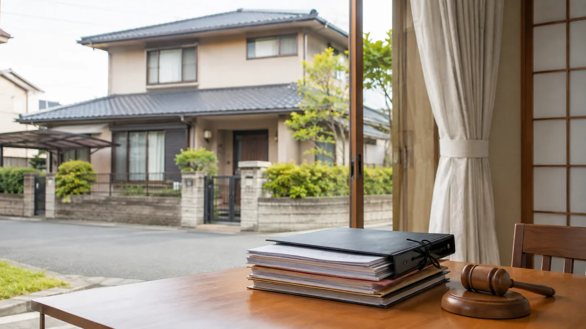
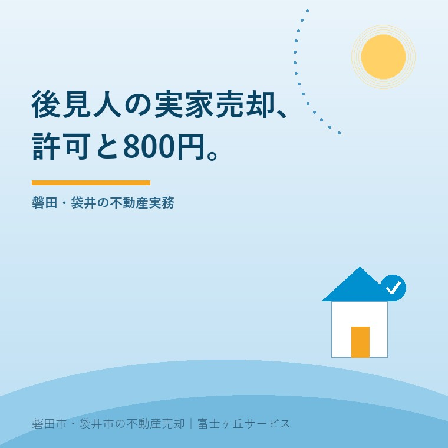

2026年9月4日｜カテゴリ：成年後見／実家売却／家庭裁判所


この記事の要点
Q. 親が施設に入り、成年後見人として実家を売りたい。800円を払えば進められますか。
A. 施設入居後でも、その実家が本人の居住用不動産に当たるなら、売却には家庭裁判所の許可が必要です。申立手数料は収入印紙800円ですが、売却全体が800円で済む意味ではありません。資料と売却条件を分けて確認します。
磐田市・袋井市では、介護と不動産を一緒に相談できる地域密着の会社へ、査定書の準備から相談する選択肢があります。
親が施設へ移ったあと、空いた実家を売る話が出ます。家族が後見人なら、自分の判断で売れると思うかもしれません。ここで最初に確認したいのが、家庭裁判所の許可です。
意外な事実は、親がすでに施設へ入っていて、家に住んでいなくても対象になり得ることです。裁判所は、本人が現在は病院や施設に入所しているため居住していない場合でも、入所前に住んでいた家などを居住用不動産に含めています。確認日は2026年9月4日です。
成年後見人が本人に代わって居住用不動産を売却する場合、家庭裁判所の許可が必要です。許可を得ない処分は無効になると、裁判所の手続案内に明記されています。
対象は売却だけではありません。抵当権の設定、賃貸借契約の締結や解除、建物の取り壊しも処分に含まれます。実家を売る前に解体して土地にする場合も、売却だけの問題として扱わないことです。
| 確認すること | なぜ見るか |
|---|---|
| その家が本人の居住用不動産か | 現在の居住だけでなく、施設入所前の居住も判断材料になるため |
| 誰が申し立てるか | 成年後見人が基本。保佐人・補助人は不動産処分の代理権が付いている場合に限るため |
| どの家庭裁判所へ出すか | 後見開始の審判をした家庭裁判所が申立先になるため |
認知症の診断名だけで売却の可否が決まるわけではありません。登記名義、後見類型、代理権の範囲、本人の生活費や施設費との関係を分けて見ます。判断が曖昧なまま家族だけで契約を急がないでください。
本人確認の順番は、老人ホーム入居後の不動産売却で見る本人確認3段階にも整理しています。本人の財産を誰がどの根拠で動かすのかを先に確認する記事です。
裁判所の案内では、申立手数料は収入印紙800円分です。ただし、郵便料は裁判所ごとに異なります。審理のため追加書類の提出を求められることもあります。
800円だけ見て、売却費用の話を終わらせてはいけません。申立ては家庭裁判所へ許可を求める手続の費用です。査定書、登記事項証明書、評価証明書、契約書の写し、測量、残置物の整理、登記、仲介手数料は別々に発生し得ます。
| 費目 | 確認の仕方 | 注意点 |
|---|---|---|
| 申立手数料 | 収入印紙800円 | 郵便料などは別で、裁判所ごとに異なる |
| 裁判所へ出す資料 | 申立書、必要性を示す資料、登記事項証明書など | 追加書類を求められることがある |
| 不動産の売却準備 | 査定、片付け、測量、境界、設備確認 | 家の状態と売り方で変わる |
| 契約と名義の整理 | 後見人の権限、契約条件、登記手続を専門家へ確認 | 個別判断を家族だけで確定しない |
裁判所が必要書類として挙げるのは、申立書のほか、処分の必要性を証する資料です。売却の場合は契約書の写し、不動産業者作成の査定書、評価証明書などが例示されています。登記事項証明書なども必要です。
申立てのための査定と、売主が納得する売出価格は同じではありません。裁判所へ説明する必要性と、買主へ提示する条件は、目的が違うからです。査定書の金額だけを家族間の分配額と決めないでください。
成年後見人の実家売却では、後見人であることを確認したうえで、次の資料を一枚の一覧にします。誰が動けるかが分かると、許可申立てと売却準備を同時に進めやすくなります。
相続登記が終わっていない家なら、売却の前に名義の問題が出ます。後見制度だけで相続手続まで片づくわけではありません。成年後見と相続登記を混ぜずに、司法書士や弁護士へ確認します。
認知症がある家族の実家を凍結させないための確認は、認知症の親の実家が止まる前に確認することも参考になります。成年後見の申立てを勧める記事ではなく、止まりやすい名義と意思確認を分けた記事です。
保佐人や補助人の場合は、代理権の有無を確認します。特別代理人や任意代理の話も、名前が似ているだけで同じ権限ではありません。特別代理人・任意代理・IT重説を混同しないための確認にも、代理権を肩書きだけで判断しない視点を書いています。
この許可制度の良い点は、本人の財産を家族だけの都合で処分しない仕組みがあることです。施設費や生活費に充てる必要性、売却条件、資料の整合性を第三者の手続に乗せられます。成年後見人自身にとっても、何を説明すべきかが見えます。
もう一つ良い点があります。裁判所の案内に査定書や評価証明書が例示されているため、売却を検討する家族は、価格を隠したまま申立てを始めなくて済みます。査定額の根拠を複数社で比べる余地もあります。
その上で注文したいのは、申立手数料800円が見出しだけで独り歩きしやすいことです。読み手が「800円ならすぐ売れる」と誤解しないよう、郵便料、資料、売却準備、契約、登記を分けて案内してほしい。手続の正しさと、家族の支出は別の表にした方が親切です。
私はこう考えます。体験ストックにこの制度の特定案件はありません。ここは実話としてではなく、宅地建物取引士としての意見です。親の家を売るか決める前に、まず「本人の居住用不動産か」「後見人の代理権はどこまでか」「裁判所へ何を出すか」を紙に並べます。まだ売らない自由を残したまま、必要な確認だけ先に進めればよいのです。
私にも迷いがあります。施設費の支払いが続くなら、売却準備を早く始める方が家計には合理的です。一方、許可の見通しが分からない段階で買主探しを先行させると、契約日や引渡し日を約束できません。ご家族には、査定と資料集めを先に行い、契約の時期は専門家と裁判所への確認後に置く、と案内します。
今日できる確認は、紙に三つの欄を作ることです。左から「本人の家との関係」「後見人の権限」「売却に必要な資料」と書きます。施設入所前に住んでいた時期、登記名義、後見開始の審判をした裁判所、手元にある証明書を記入します。
磐田市や袋井市で施設入居後の実家を整理する場合、介護の状況と不動産の状態を別々の会社へ説明すると、同じ話を何度もする負担が出ます。富士ヶ丘サービスでは、介護施設の運営経験を持つ担当者が、介護と不動産の相談を一つの段取りに並べます。ただし、裁判所の許可や登記の判断を代わりに確定するものではありません。
今日結論を出す必要はありません。家庭裁判所の許可が必要か、申立てに何を添えるかを確認してから、現況売却、修繕後の売却、保有継続を比べられます。
必要になる場合があります。裁判所は、本人が現在住んでいなくても、将来住む可能性がある場合や、施設入所前に住んでいた場合を含む居住用不動産の処分には許可が必要と案内しています。売却前に後見人の権限と不動産の用途を専門家へ確認してください。
申立手数料は収入印紙800円分ですが、郵便料などは裁判所ごとに異なります。裁判所が審理のため追加書類を求めることもあります。800円で売却手続全体が済む意味ではなく、査定、測量、片付け、登記、仲介などの費用は別に見積もります。
許可申立てに売却の必要性を示す査定書が必要になるため、申立ての準備として査定を相談することは考えられます。ただし、媒介契約や売買契約をいつ締結できるかは、後見人の権限、裁判所の扱い、契約条件で変わります。司法書士や弁護士、家庭裁判所へ確認してください。

この記事を書いた人：大石浩之（宅地建物取引士）
大石浩之（磐田市／不動産業）。介護施設の運営経験をもとに、施設入居後の実家売却で、本人確認、後見人の権限、査定と契約の順番を整理しています。プロフィール
磐田市・袋井市・森町の成年後見・実家売却相談
許可と売却準備を、同じ表で整理する
本人の生活と家族の段取りを確認し、査定書や現況資料を揃えます。税務・登記・相続の個別判断は各専門家へつなぎます。
本記事は2026年9月4日時点の公表資料に基づく一般的な説明です。成年後見人、保佐人、補助人の権限、居住用不動産に当たるか、家庭裁判所への申立て、契約と登記の扱いは個別事情で変わります。税務・登記・相続の個別判断は司法書士、弁護士、税理士、家庭裁判所などの専門家に確認してください。
富士ヶ丘サービス株式会社／静岡県磐田市見付5789番地1／TEL:0538-31-3308／静岡県知事 (2) 第14083号／代表取締役・宅地建物取引士 大石 浩之